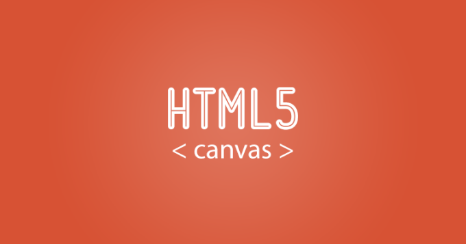

权威链接
一、语义化标签
用最恰当的HTML元素标记内容，有利于SEO，结构清晰，提升可访问性
这里是header
这里是nav
这里是main
strong标记
mark标记
这里是pre,预格式化文本， 保留文本固有的换行和空格
em标记内容着重点，大量用于提升段落文本语义
这里是article
里面还可以嵌套article
二、Video、Audio
三、表单新特性
Range
Number
Email
Url
Tel
Search
Color
Date
Week
Month
四、存储
Cookie
Flash
WebStorage
IndexedDB
五、定位
获取定位
六、Canvas
七、SVG
八、拖放API
参考这里
九、WebSocket
创建socket
发送
十、WebWorker
创建worker
十一、新事件
